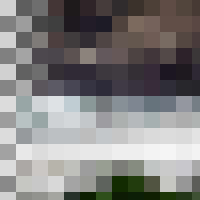

Pixelize
Simplify image into an array of solid-colored rectangles
Shape
The shape of pixels
name: norm
type: enum
Block width
Width of blocks in pixels
name: size-x
type: int
default: 16
minimum: 1
maximum: +inf
ui-minimum: 1
ui-maximum: 2048
ui-gamma: 1.50
ui-step-small: 1
ui-step-big: 100
unit:pixel-distance
axis:x
Block height
Height of blocks in pixels
name: size-y
type: int
default: 16
minimum: 1
maximum: +inf
ui-minimum: 1
ui-maximum: 2048
ui-gamma: 1.50
ui-step-small: 1
ui-step-big: 100
unit:pixel-distance
axis:y
Size ratio X
Horizontal size ratio of a pixel inside each block
name: ratio-x
type: double
default: 1.00
minimum: 0.00
maximum: 1.00
ui-minimum: 0.00
ui-maximum: 1.00
ui-gamma: 1.00
ui-step-small: 0.00
ui-step-big: 0.10
ui-digits: 3
axis:x
Size ratio Y
Vertical size ratio of a pixel inside each block
name: ratio-y
type: double
default: 1.00
minimum: 0.00
maximum: 1.00
ui-minimum: 0.00
ui-maximum: 1.00
ui-gamma: 1.00
ui-step-small: 0.00
ui-step-big: 0.10
ui-digits: 3
axis:y
Background color
Color used to fill the background
name: background
type: color
default: rgb(1.0000, 1.0000, 1.0000)
role:color-secondary
pads: input output
parent-class: GeglOperationAreaFilter
categories: blur scramble
OpenCL
source: operations/common/pixelize.c
position-dependent: true
 This page is part of the online GEGL Documentation, GEGL is a data flow based image processing library/framework, made to fuel GIMPs high-bit depth non-destructive editing future.
This page is part of the online GEGL Documentation, GEGL is a data flow based image processing library/framework, made to fuel GIMPs high-bit depth non-destructive editing future.